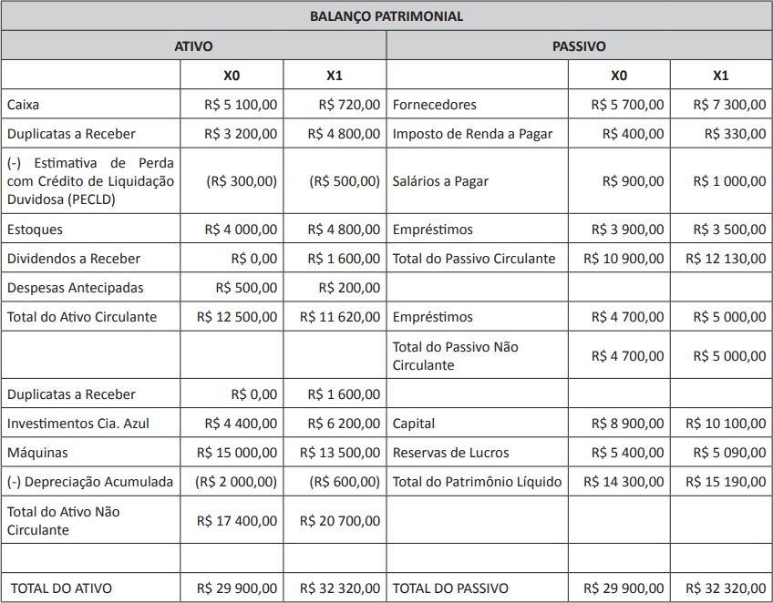

A Cia. Salamanca, sociedade empresária do ramo alimentício, apresentou os seguintes demonstrativos
contábeis no encerramento do exercício de X1:

Informações adicionais:
-
o investimento da Cia. Azul está sendo avaliado pelo método de custo;
-
as máquinas estão sendo depreciadas linearmente a 10% a.a.;
-
em 30/06/X1, todas as máquinas foram vendidas, com recebimento à vista;
-
as despesas financeiras foram integralmente pagas no período;
-
no mês de janeiro de X1, foram transferidos R$ 470,00 de empréstimos a longo prazo para a conta
empréstimos a curto prazo;
-
no mês de setembro de X1, foram realizados pagamentos de R$ 870,00 dos empréstimos contraídos;
-
no transcorrer do ano de X1, foi realizado um aumento de capital em dinheiro, no valor de R$ 600,00.
Considerando o que dispõe o CPC03 – Demonstração dos Fluxos de Caixa – e a análise das demonstrações
e informações adicionais apresentadas pela Cia. Salamanca, assinale a opção que apresenta a apuração
do saldo da ATIVIDADE DE INVESTIMENTO da Demonstração do Fluxo de Caixa da Cia. Salamanca, em X1.
-
(R$ 1 530,00)
-
(R$ 1 550,00)
-
(R$ 1 870,00)
-
(R$ 3 350,00)
-
(R$ 3 650,00)